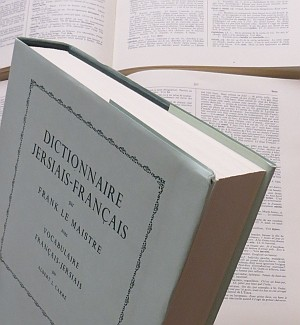

Trenton, Michigan,
U.S.A.
Lé 22 d'octobre, 1966.
Moussieu l'Rédacteu,
M'èrvélà en Améthique! Nou-s a d'la peine à rêaliser la vitesse du viage dé nouos jours. Lundi passé j'tais à dîner en Jèrri et à baithe du thée à Stoke Poges pas bein liain d'Londres en Angliétèrre. Mardi j'tais à visiter la neuve Cathédrale dé Coventry. Un drôle dé bâtisse, chutte cathédrale - une vraie exempl'ye d'architectuthe ecclésiastique modèrne comme nou-s en vait un tas au Canada et dans l's Êtats-Unis d'nouos jours. Étant vyi et consèrvateur dé natuthe, j'aime mus les vielles cathédrales gothiques, mais ches jours nou-s est oblyigis d'accepter tout ch'tch'est drôle et êtrange au nom du progrés!
Jeudi matîn j'dêjeunis à Stoke Poges, j'mangis man dîner dans un avion à rêaction trente-trais mille pids dans l'air en d'ssus d'l'Atlantique, et j'bus du thée en Améthique auprès aver viagi un mio pus qu'trais mille milles dans sept heuthes!

Ch'est r'mèrquabl'ye comme nou s'accouôteunme si vite à tout. Man fréthe Frainque 'tait à ma rencontre à l'aérodrome dé Detroit, au Michigan. En nouos en allant siez li dans san moto, j'avais d'la peine à rêaliser qué j'tions dans l'nouvieau monde à la pliaiche d'êt' en Jèrri, car nouot' convèrsation 'tait en Jèrriais. Assis à bailli d'nouot bec siez-li hièr ch'tait la mème chose, et i' voulait saver toutes les nouvelles dé Jèrri. La preunmié chose qué j'lî montris en arrivant 'tait l'fanmeux dictionnaithe Jèrriais-Français - lé chef-d'oeuvre dé Fraînque Le Maistre. I' n'pouvait pon en r'vénîn! J'passînmes d's heuthes à r'garder pour des mots Jèrriais tchi lî v'naient à l'idée, et il 'tait êmèrvilyi d'vaie qu'nou les trouvait san peine. Et pis, quand i' m'dit, "J'avais tréjous ouï tch'i' n'y avait pon d'grammaithe dé la langue Jèrriaise, mé," et qué j'lî montris la "Conjugaison des Verbes" à la page xxx au c'menchement du dictionnaithe, ou-s éthiez deu l'vaie ouvri l's ièrs! J'feunmes la grand' partie d'la matinnée à r'garder chu chef-d'oeuvre tchi s'en va faithe lé nom dé Fraînque Le Maistre immortel!
L'arlévée s'passit en pâlant des Jèrriais connus d'pis nouot' jannèche à St. Ouën. "As-tu 'té vaie Edmund Vibert?", s'faisait l'Fraînque. "Et Stanley Alexandre, est-i' acouo dans l'chant à St. George? Et est-che acouo Moussieu Fraînque Hâcou tch'est iun des pilièrs dé ch't églyise-là? J'm'èrsouveins d'aver veu san p'pèe et sa m'mèe, et Moussieu George et des deux soeurs y v'nîn, tchiquesfais en cârrosse, quand j'tais à L'Êcole du Dînmanche et qu'Moussieu Pépîn et Moussieu Barascud prêchaient des longs sèrmons! Et la Danme Boutilyi, y va-t-alle acouo touos les Dînmanches? Et la bouannefemme Missis George J'valyi, y marche-t-alle acouo comme d'amors? Et Jean Burlot, peut-i' acouo couorre aussi vite comme mé? Et tch'il âge qué l'bouanhomme Maît' Ph'lippe Gallienne a à ch't heu? Et la Tante Vîne, va-t-alle acouo en ville deux-s'trais fais la s'maine par la beusse? As-tu veu Jean Pèrrée?"
I' n'en finnissait pon, dé mé d'mander des tchestchions. À ma honte, j'eus à lî dithe qué j'n'avais pon ieu l'temps d'aller vaie Jean Pèrrée, ni un tas d'aut' anmîns qu'j'éthais voulu vîsiter, viyant qu'j'avais passé trop d'temps houors Jèrri et à travailyi - jusqu'à la dreine munute - au vièr Ménage ès Feuvres. Mais j'pouvais lî dithe qué j'avais 'té r'chu et régalé comme un rouai par Edmund Vibert et sa danme; qué Moussieu et Madanme Fraînque Hâcou, la Danme Boutilyi et Stanley Alexandre et sa danme sont tréjous fidèles à St. George; qué ch'est un pliaîsi d'vaie Missis J'valyi, tch'a nénante ans, à l'églyise touos les Dînmanches et qu'oulle y marche acouo toute seule en allant douochement; qué nouot' vièr anmîn Ph'lippe Gallienne a nénante-iun an et qu'nou l'vait par les c'mîns touos les jours; qu'la Tante Vîne est acouo plienne dé vie et d'bouanne heunmeu ouaithe qu'ou' n'va pon en ville aussi souvent comme ou soulait, et qu'Jean Burlot a survêtchut toutes ses maladies, mais qu'jé n'sai pon s'i' pouôrrait acouo gangni eune course à couorre mais tch'il est acouo comme un p'tit co d'gamme quand i' s'mârrit!
"Et as-tu 'té ès pihangnes?", Fraînque mé d'mandait.
"Nannîn dgia!", j'eus à lî dithe, "I' n'y en a pon au rotchi. Faut 'spéther tch'i' y'en étha quand tu veindras en Jèrri auve mé l'année tchi veint. Né v'la trais ans tch'il' ont dispathu, et nou n'en trouve pus à bâsse-ieau."
"Et l's ormèrs?"
"Eh bein," j'lî dis. "J'n'eus pon l'temps d'y aller, mais Missis Fraînque Le Maistre m'en bailli un bouan fricot dévant m'en v'nîn en Améthique."
Nou s'accouôteunme si vite à tout changement tch'i' n'mé pathais pon fort drôle d'êt' dans un aut' monde. Tout d'mème, quand j'tais à boutitchi auve lé Fraînque à matîn, j'viyais d'la difféthence entre Jèrri et l'Améthique dans les faches des gens dans la boutique. En Jèrri nou n'vait pon grand' difféthence entre Jèrriais et Angliais. Ichîn, nou-s en vait d'toutes sortes, et ch'est întérêssant dé d'viner tch'est tch'est les d'scendants des difféthentes races blianches, rouoges, jaunes et néthes tchi sont l's Amétchitchains d'aujour-d'aniet!
George d'La Forge
Viyiz étout: